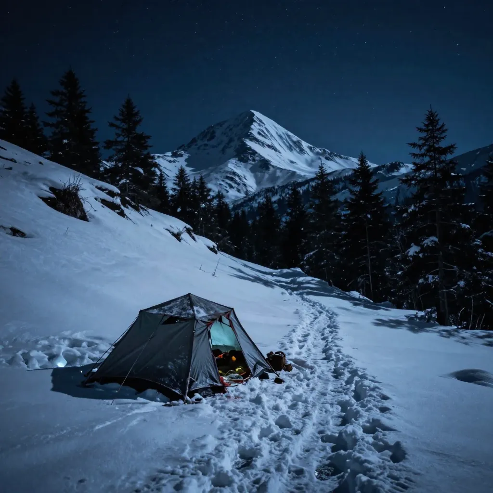

Dyatlov Pass Incident: The 1959 Mystery Where 9 Hikers Died in Ways That Still Defy Explanation

On the night of February 1, 1959, nine experienced young hikers from the Soviet Union’s Ural Polytechnic Institute pitched their tent on the frozen slopes of a mountain the local Mansi people called Kholat Syakhl — “Dead Mountain.” They were led by Igor Dyatlov, a 23-year-old engineering student and seasoned trekker, and their expedition was classified as Category III, the highest difficulty rating for hiking in the Soviet Union. They were fit, prepared, and familiar with the brutal conditions of the northern Ural Mountains in winter. By morning, every one of them would be dead, scattered across the frozen mountainside in ways that would baffle investigators for over sixty years. When search parties finally found their campsite three weeks later, they discovered a scene so disturbing, so physically inexplicable, that the Soviet authorities sealed the case files and classified the deaths as caused by a “compelling natural force” — a phrase that answered nothing and raised every question. The Dyatlov Pass Incident remains, to this day, one of the most chilling and thoroughly debated mysteries of the twentieth century.
The group consisted of nine hikers: Igor Dyatlov (23, the leader), Zinaida Kolmogorova (22), Lyudmila Dubinina (20), Alexander Kolevatov (25), Rustem Slobodin (23), Georgy Krivonischenko (24), Yuri Doroshenko (24), Nicolai Thibeaux-Brignolles (24), and Alexander Zolotarev (37, the oldest member and a World War II veteran). They had set out on January 23, 1959, heading toward Mount Otorten in the northern Urals, a remote and punishing route that would test even the most skilled winter mountaineers. They kept diaries and shot photographs along the way, documenting a journey that was challenging but uneventful — until the final night. On February 1, for reasons that remain unknown, Dyatlov’s group deviated from their planned route and made camp on the exposed eastern slope of Kholat Syakhl, rather than in the relative shelter of the nearby forest valley. The temperature outside was approximately -30°C (-22°F). What happened next has been the subject of books, documentaries, scientific papers, and endless speculation ever since.
The first search teams reached the slopes of Kholat Syakhl on February 26, 1959, nearly a month after the group was expected back. What they found has haunted investigators ever since. The tent was still standing, half-buried in snow — but it had been cut open from the inside with a knife. The hikers’ belongings, shoes, warm clothing, and supplies were still inside, neatly arranged. Footprints in the snow, made by people wearing socks, single boots, or nothing at all, led away from the tent and down the slope toward the edge of a nearby forest, approximately 1.5 kilometers away. The temperature that night had plunged to -30°C. Whatever had driven nine experienced hikers to slash their way out of their only shelter and flee half-dressed into the frozen darkness, it had been sudden, overwhelming, and absolutely terrifying.
The reconstruction of events that followed, pieced together from the physical evidence, the forensic autopsies, and the diaries and photographs recovered from the site, suggests that the hikers ran from the tent in at least two or three groups. Some made it to the edge of the forest, where they found a large cedar tree and attempted to seek shelter. Others apparently tried to return to the tent — their bodies were found at intervals along the slope between the cedar and the campsite, as if they had collapsed while trying to crawl back to shelter in the dark. The two groups found different fates, but all nine met the same end. The question that has consumed investigators, scientists, and amateur sleuths for six decades is deceptively simple: what made them run?
The discovery of the bodies unfolded over weeks and months, each new find deepening the mystery rather than resolving it. The first two victims — Yuri Doroshenko and Georgy Krivonischenko — were found on February 27 near the base of the cedar tree at the edge of the forest. They were barefoot and dressed only in their underwear. The branches of the cedar had been broken up to a height of nearly five meters, suggesting that someone had climbed the tree desperately, possibly to look for the tent or to escape something on the ground. Both men’s hands were burned — Krivonischenko’s severely — possibly from grabbing burning branches in an attempt to warm themselves or signal for help. They had died of hypothermia. No other injuries were found.
Three more bodies were discovered between late February and early March in the space between the cedar tree and the tent. Igor Dyatlov was found in a pose suggesting he had been trying to crawl back to the tent, his fist clenched around a tree branch. Zinaida Kolmogorova was found face-down in the snow, also on the route back toward camp. Rustem Slobodin was nearby, and the autopsy revealed he had suffered a fractured skull — a significant injury, though not enough to have been immediately fatal on its own. All three died of hypothermia. The positions of their bodies suggested that after whatever had driven them from the tent, they had attempted a desperate return to shelter in the dark and cold, and had not made it.
Then came the discovery that transformed a tragic hiking accident into one of the most disturbing mysteries of the twentieth century. On May 4, 1959, the last four bodies were found in a ravine approximately 75 meters from the cedar tree, buried under four meters of snow. These were Lyudmila Dubinina, Alexander Kolevatov, Alexander Zolotarev, and Nicolai Thibeaux-Brignolles. Their injuries were unlike anything the search teams or the medical examiners had expected. Dubinina, the youngest woman in the group at just 20 years old, was missing her tongue, eyes, and part of her lip. Her chest had been crushed by a force that the chief medical examiner described as “equal to the effect of a car crash” — yet there were no external wounds on her torso. Thibeaux-Brignolles had suffered massive skull damage. Zolotarev and Kolevatov had crushed ribs — the same impossible internal trauma with no corresponding external injuries. The clothing on several of these four bodies tested positive for unusual levels of radioactive contamination. Several of the victims’ skin had taken on a strange orange-brown or grey tint.
The forensic reports from the autopsies have been scrutinized by pathologists, physicists, and avalanche experts for decades. The crucial detail is the nature of the injuries to the last four victims. Dubinina’s crushed chest required a force of enormous magnitude — the medical examiner compared it to being hit by a car traveling at high speed. Zolotarev’s ribs were crushed on both sides. Thibeaux-Brignolles’ skull was extensively fractured. Yet none of these victims had the external wounds, bruises, or lacerations that would normally accompany such trauma. No fallen rocks were found near the bodies. No signs of a struggle, combat, or animal attack were present. The force had been applied in a way that crushed bone without breaking skin — a characteristic of extreme pressure, such as being caught in an avalanche or crushed by a heavy, uniform weight. The missing tongue and eyes of Dubinina have been attributed by some experts to natural post-mortem decomposition and scavenging by small animals, while others find this explanation unconvincing given the relatively intact state of the rest of the body.
Since 1959, virtually every conceivable explanation for the Dyatlov Pass Incident has been proposed, analyzed, and debated. The official Soviet investigation, led by investigator Lev Ivanov, concluded in 1959 that the deaths were caused by a “compelling natural force” — a deliberately vague verdict that satisfied no one and left the case officially open but effectively closed. The files were classified for decades. The most prominent theory is the avalanche explanation: a slab avalanche, triggered by the combination of the hikers cutting into the slope to pitch their tent and subsequent heavy snow loading from strong katabatic winds, struck the tent during the night, injuring several hikers and forcing the rest to flee in panic. In 2021, a landmark study published in Communications Earth & Environment by Swiss researchers Johan Gaume and Alexander Puzrin used advanced computer modeling to demonstrate how a rare delayed slab avalanche could explain the chest injuries, the skull fracture, and the panicked flight from the tent. The study showed that the avalanche could have been triggered hours after the slope was cut — a crucial detail that accounts for the timing that earlier avalanche theories could not explain.
Other theories have persisted alongside the avalanche explanation. The katabatic wind theory proposes that extreme, localized downdrafts of cold air — reaching hurricane force — struck the tent and made it impossible to stay, forcing the hikers to flee. The infrasound theory suggests that wind passing over the rounded summit of Kholat Syakhl generated sound waves below the frequency of human hearing, linked to feelings of panic, dread, and disorientation, inducing a state of irrational terror. The military weapons test theory draws on the radioactive clothing, the classified investigation files, and the proximity of Soviet military installations, arguing that the hikers may have stumbled into a weapons testing area and been killed or injured by ordnance, with the aftermath covered up by Soviet authorities. The paradoxical undressing theory addresses the partial clothing by noting a known medical phenomenon in which severe hypothermia causes victims to undress as the body’s temperature regulation system fails — though this explains only the state of undress, not the injuries.
One of the most intriguing figures in the case is Lev Ivanov himself, the lead investigator of the original 1959 Soviet probe, who spent years troubled by what he had seen on Kholat Syakhl. In the 1990s, after the fall of the Soviet Union, Ivanov spoke publicly about aspects of the case that had been suppressed. He revealed that several groups of witnesses — including independent hikers and meteorologists in the region — had reported seeing strange glowing spheres or “fire orbs” in the sky over the northern Urals on the night of February 1, 1959. Ivanov himself came to believe that something extraordinary — possibly related to unknown atmospheric phenomena — had terrified the hikers and driven them from their tent. His testimony has been seized upon by UFO enthusiasts and dismissed by skeptics, but it adds another layer to a case that already has more layers than any rational person could want. Ivanov died in 1997, still insisting that the official investigation had not told the whole truth.
In 2020–2021, Russian authorities reopened the investigation and concluded that a snow avalanche was the most likely cause. Many of the victims’ families rejected this conclusion, arguing that it did not adequately explain the full range of evidence. The 2021 study by Gaume and Puzrin represented the most rigorous scientific attempt to model the event. Their simulation showed that a slowly developing slab avalanche, triggered by the unusual combination of a slope cut by the hikers, katabatic wind-deposited snow, and the mountain’s irregular topography, could produce exactly the pattern of injuries observed — crushing ribs without external wounds, fracturing the skull, and creating sufficient panic to drive the group from the tent. The study was widely praised for its scientific rigor, but even its authors acknowledged that they could not prove what happened — only that their model demonstrated a plausible mechanism.
The Dyatlov Pass Incident is not simply a cold-case mystery. It is a mirror that reflects the anxieties of every era that has examined it. In the 1960s, it was read through the lens of Cold War secrecy and Soviet cover-ups. In the 1990s, after the fall of the USSR, it became a story of government lies finally exposed. In the 2000s, it was reimagined through the lens of paranormal phenomena and unexplained aerial events. In 2021, it became a story about the power of computational physics to model catastrophe. Each generation finds in the Dyatlov Pass the explanation it wants to believe. But the mountain itself reveals nothing. The nine young hikers — students, engineers, a veteran, a photographer — went into the cold on the night of February 1, 1959, and did not come back. Their tent was cut open from the inside. Their bodies were scattered across the slope and the forest and the ravine. Some had injuries that should have required a car crash. One was missing her tongue. Some of their clothing was radioactive. The official explanation was a phrase that explained nothing. Today, the pass through the mountains where they died bears Igor Dyatlov’s name — the Dyatlov Pass — and a memorial stands at the site where the tent was found. The dead keep their silence. The mountain keeps its secrets.
References & Further Reading
📚 Recommended Reading: Dead Mountain: The Untold True Story of the Dyatlov Pass Incident (on Amazon) — As an Amazon Associate, we earn from qualifying purchases.
Editorial note: The Dyatlov Pass Incident is documented through Soviet-era investigation files, forensic autopsy reports, the 2021 Gaume-Puzrin study in Communications Earth and Environment, and numerous eyewitness accounts. See our Editorial Policy.